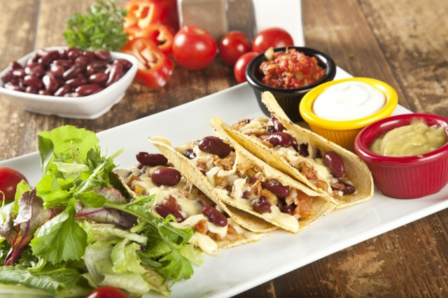
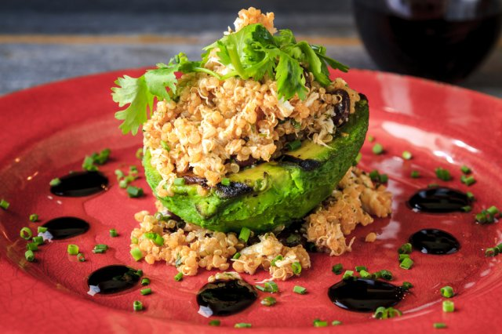
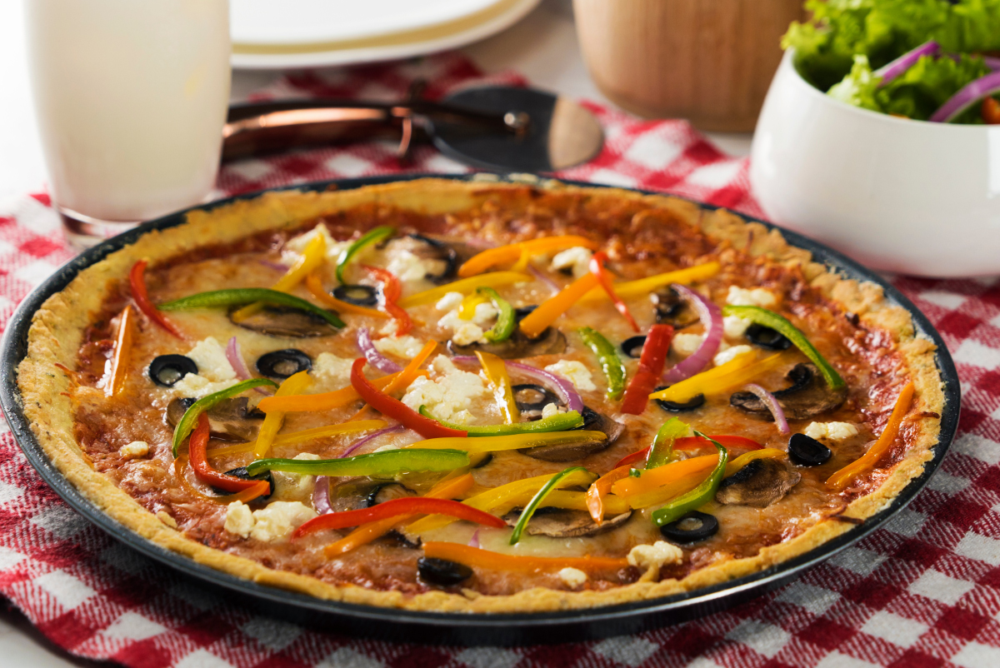
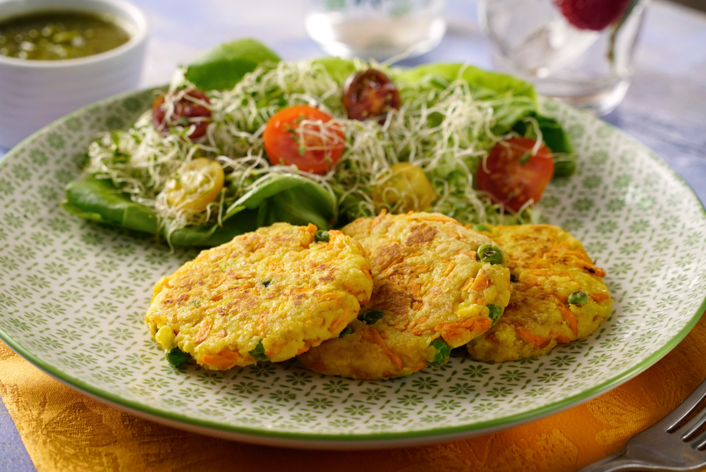
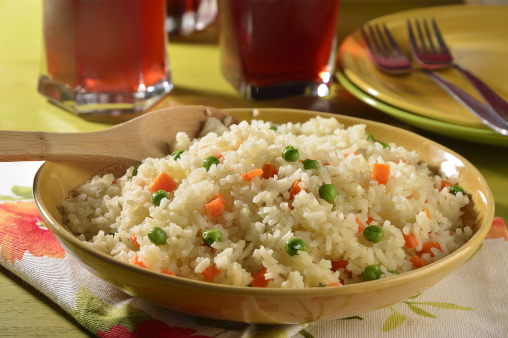
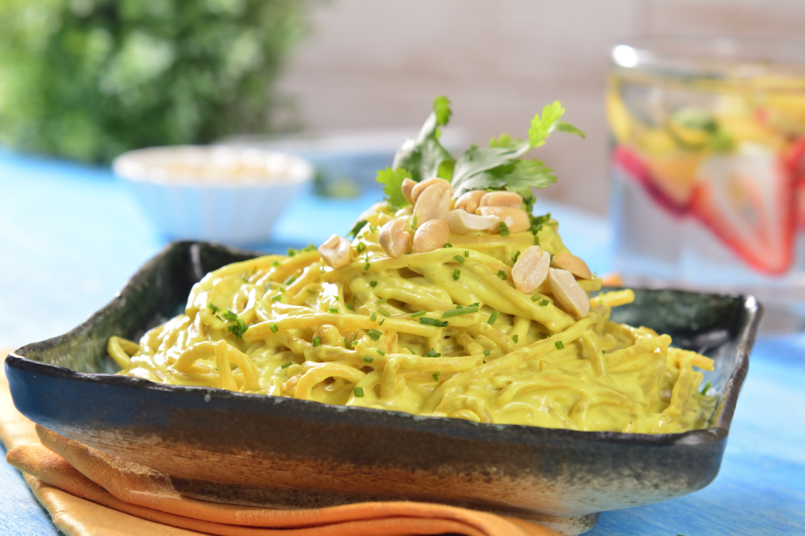
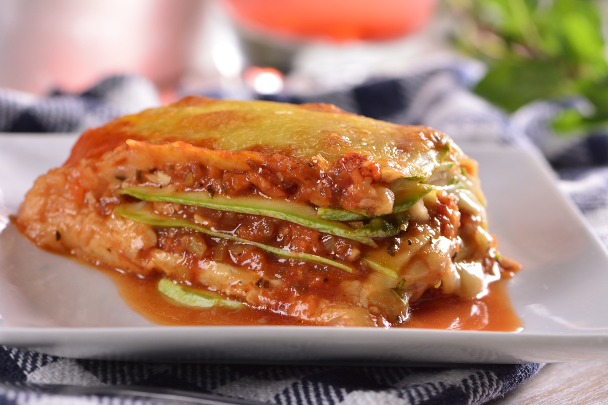
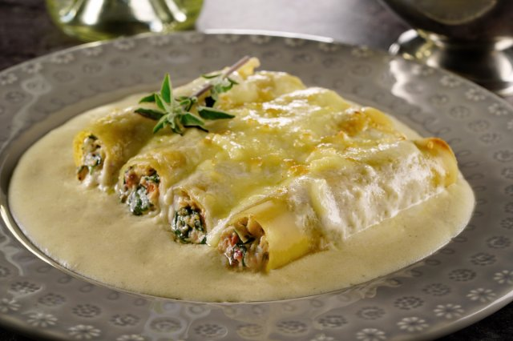

-
HAMBURGUESA VEGETARIANA

Disfruta de unas deliciosas hamburguesas con todo el sabor del hummus. Su equilibrada mezcla de ingredientes, hará que no puedas resistirte ...
Leer Mas -
TAQUITOS DE FRIJOLES
Haz de tu cena algo increíble con estos taquitos de frijoles acompañados de un hummus de haba, que equilibra perfectamente...
Leer Mas -
AGUACATE RELLENO DE AMARANTO
Esta receta de aguacate relleno de amaranto te encantará, ya que es una opción muy saludable y que con su sabor conquistará a todos. Tiene los beneficios de la grasa buena del aguacate y el amaranto que esta lleno de...
Leer Mas -
PIZZA SIN GLUTEN VEGETARIANA
Prepara esta espectacular pizza sin gluten elaborada con harina de arroz. Una colorida y variada presentación de vegetales, la hacen deliciosa y saludable. Consiente a tu familia y....
Leer Mas -
TORTITAS DE VERDURAS HORNEADAS
Disfruta de esta excelente receta de tortitas de calabaza con zanahoria y puré de papa de las sobras de la comida del día anterior, con su rico sabor son ideales para la hora de la comida, lo mejor de todo es que son horneadas en vez de fritas...
Leer Mas -
ARROZ BLANCO CON ZANAHORIAS Y CHÍCHAROS
Con este Arroz Blanco podrás acompañar todos tus platillos , es una receta muy fácil de preparar que no puede faltar en la mesa de cualquier hogar...
Leer Mas -
SPAGHUETTI CON SALSA DE CACAHUATE Y AJONJOLÍ
Nutritivo platillo de spaghetti integral, con salsa de leche de coco, cacahuate, ajonjolí y un toque de especiado curry. Esta receta es muy fresca y rica; una opción saludable. Prueba esta deliciosa combinación...
Leer Mas -
LASAÑA DE CALABAZA Y QUESO MANCHEGO
Rica y saludable lasaña de láminas de calabaza con relleno de carne de res, verduras y salsa tradicional. Gratinada con queso manchego, es la opción más nutritiva para comer esta deliciosa versión de platillo italiano...
Leer Mas -
CANELONES DE ESPINACA CON SALSA ALFREDO
Prepara estos ricos canelones rellenos de espinacas cremosas bañados con una salsa Alfredo que te encantarán. Tienen un cremoso relleno hecho a base de queso ricotta con jitomate deshidratado y por supuesto espinacas Eva®. ¡Te encantarán!...
Leer Mas -
NOODLES DE ARROZ

Estos fideos de arroz se usan mucho en la comida asíatica y se pueden preparar de muchas maneras, esta receta es rica y sumamente versátil. Con esta base puedes preparar de la forma y con las verduras que quieras. ...
Leer Mas